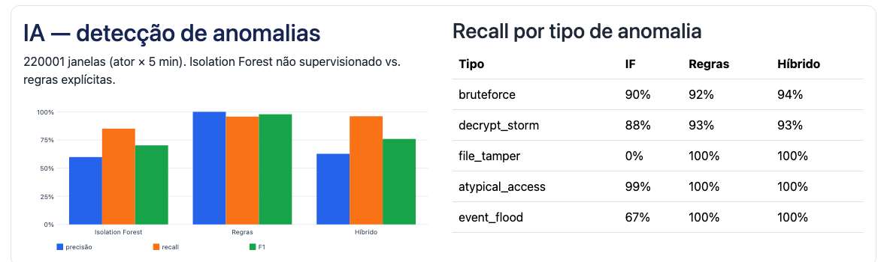
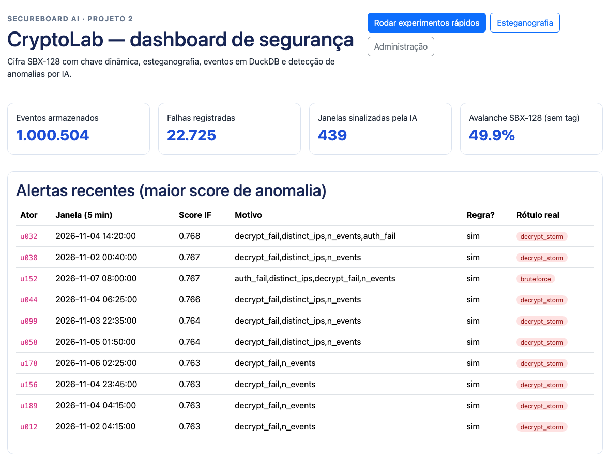

CryptoLab: sistema criptográfico e análise de ataques
Cifra simétrica própria com chave dinâmica, esteganografia, Big Data, IA e dashboard de segurança
Projeto
Disciplina
Equipe
SecureAI Lab — Projeto 2 (continuação do SecureBoard AI)
Cibersegurança Aplicada a Dados e IA Profa. Renatta Nigro
Eurivaldo José de Vasconcelos Filho Alec Carneiro Theotônio Lucas Ferraz Santana Filgueiras Felipe Rodrigues Serpa Azevedo Pedro Wanderley de Lira Santos
Resumo
O CryptoLab é um módulo do SecureBoard AI (Flask + SQLite) que implementa e ataca uma cifra de blocos própria, a SBX-128. Ela combina XOR com chaves de rodada, substituição por S-box dependente da chave, permutação de bytes e mistura linear em GF(28), em 10 rodadas sobre blocos de 128 bits. A chave de cada mensagem é derivada dinamicamente (HKDF-SHA256 + salt aleatório) de uma chave mestra versionada, com chaves separadas para cifrar e autenticar (CBC + HMAC-SHA256). O segredo cifrado pode ser ocultado em imagens por esteganografia LSB com ordem de pixels derivada da chave. As operações e as tentativas de acesso são registradas em um repositório colunar (DuckDB/Parquet), onde um Isolation Forest detecta comportamentos anômalos. Um dashboard administrativo apresenta ataques, anomalias e resultados.
A equipe atuou como analista de segurança da própria cifra. Cinco variantes, da didática à de referência de mercado, foram submetidas a força bruta, análise diferencial (avalanche e SAC) e análise estatística (χ², entropia, blocos repetidos e ataque de frequência). A variante completa apresentou avalanche de 49,94% no texto cifrado, saída estatisticamente uniforme (χ² p = 0,60; 7,997 bits/byte) e espaço de chave de 2256. As variantes enfraquecidas foram quebradas: a cifra XOR teve a chave recuperada só com o texto cifrado. O pipeline processou 1.000.000 de eventos em 0,37 s de ingestão, e o detector híbrido alcançou recall de 96,1%.
49,94%avalanche SBX-128
2256espaço de chave
1.000.000eventos analisados
96,1%recall do detector híbrido
Resposta ao feedback do Projeto 1
O avaliador recomendou não depender de uma única chave simétrica para operações ou usuários diferentes. Isso foi incorporado em dois níveis:
No CryptoLab: a chave mestra nunca cifra dados. Cada mensagem deriva chaves próprias por finalidade (cifragem, MAC, S-box, permutação, rodadas, esteganografia). O key_id permite rotação sem perder dados antigos.
No SecureBoard: as mensagens privadas passaram à versão 2. Cada conversa usa uma chave AES-256 derivada por HKDF do par de participantes, e as linhas da versão 1 continuam legíveis.
O relatório também inclui o registro detalhado do uso de IA (seção 09), que havia ficado incompleto.
01 Arquitetura
Arquitetura e decisões de projeto
A arquitetura segue as seis camadas pedidas no enunciado. Cada camada é um módulo Python independente do Flask em cryptolab/, testável isoladamente. O dashboard (apps/cryptolab) é apenas a camada de apresentação e herda do SecureBoard o RBAC no servidor, o CSRF, a CSP e o registro de auditoria.
1. EntradaTexto (mensageria simulada) e imagens PNG/JPEG enviadas pelo admin
2. CriptografiaSBX-128 + CBC + HMAC; AES-256-GCM como referência
3. EsteganografiaPayload selado escondido em LSB com ordem secreta
4. Big DataDuckDB colunar, 1M eventos, exportação Parquet
5. IAIsolation Forest + regras em janelas ator × 5 min
6. DashboardAlertas, gráficos SVG, ataques e conclusões
Módulo
Responsabilidade
Decisão e justificativa
cryptolab/keys.py
Chaveiro, HKDF e rotação
A chave mestra só deriva outras chaves. Finalidades fixas (enc, mac, round, sbox, perm, stego) garantem separação de domínio: comprometer uma chave derivada não revela as demais.
cryptolab/cipher.py
SBX-128, modos e envelope
Cifra SPN parametrizável em número de rodadas e modo, o que permite comparar versões fracas e fortes do mesmo projeto.
cryptolab/stego.py
LSB, PSNR, esteganálise χ²
Esconde o payload já cifrado e autenticado. A esteganografia oculta a existência; a criptografia protege o conteúdo.
cryptolab/events.py e simulate.py
Armazenamento e carga sintética
DuckDB é colunar e vetorizado, adequado para varreduras analíticas. O Parquet permite migrar para Spark ou BigQuery. O SQLite continua como base transacional do app.
cryptolab/anomaly.py
Detecção de anomalias
Modelo não supervisionado (não exige exemplos de ataque), comparado a regras transparentes e avaliado com rótulos de verdade.
cryptolab/attacks.py e experiments.py
Ataques e métricas
Todos os experimentos usam seed fixa e são reproduzíveis com flask --app run cryptolab-all.
Tipo de dado escolhido
A equipe escolheu texto em mensageria simulada, por coerência com as mensagens privadas do SecureBoard, e imagens como portadoras na esteganografia e como prova visual de vazamento de padrões. A variante ECB permite ver a forma da imagem através do texto cifrado.
Requisitos do enunciado × implementação
Requisito
Onde está
Evidência
Chave secreta influencia a cifragem e não é fixa
HKDF(mestra, salt aleatório) por mensagem; rodadas, S-box e permutação dependem da chave
Mesma mensagem cifrada duas vezes gera saídas diferentes; avalanche de chave de 49,91%
SAC: o desvio cai de 0,469 (1 rodada) para 0,033 (10 rodadas)
Esteganografia em imagens
stego.py, página /admin/cryptolab/stego
PSNR de 65,7 dB; 3 de 3 adulterações rejeitadas
Big Data e anomalias
DuckDB + Isolation Forest
1M de eventos; recall do híbrido de 96,1%
Força bruta, diferencial e estatístico
attacks.py
Seção 06
Dashboard
/admin/cryptolab (somente admin)
Capturas nas seções 04 a 07
02 Algoritmo
SBX-128: descrição e funcionamento
A SBX-128 é uma rede de substituição e permutação (SPN) com blocos de 16 bytes e 10 rodadas. Cada rodada combina as quatro operações exigidas. A ordem foi escolhida para que cada operação compense a fraqueza da outra: o XOR sozinho é linear e a S-box sozinha atua byte a byte.
para r = 1..10:
estado ^= K[r-1] # XOR com chave de rodada (introduz o segredo)
estado = SBOX[estado] # substituição não linear, S-box gerada pela chave (confusão)
estado = PERM(estado) # permutação de bytes gerada pela chave (espalha posições)
se r < 10: MixColumns(estado) # combinação linear em GF(2^8) (difusão entre bytes)
estado ^= K[10] # branqueamento final
Geração dinâmica de chaves
Chave mestra de 256 bits, gerada com secrets, guardada fora do código (CRYPTOLAB_MASTER_KEYS) e identificada por key_id.
Por mensagem: um salt aleatório de 16 bytes gera k_enc = HKDF(mestra, salt, "enc") e k_mac = HKDF(mestra, salt, "mac"). A chave efetiva muda a cada mensagem.
Key schedule: de k_enc derivam-se as 11 chaves de rodada, a S-box (embaralhamento de Fisher–Yates com amostragem por rejeição) e a permutação de 16 posições. Trocar um bit da chave produz outra S-box, outra permutação e outras chaves de rodada.
Rotação:KeyRing.rotate() cria uma nova mestra ativa. As antigas continuam no chaveiro apenas para decifrar, e o key_id do envelope indica qual usar.
Modo de operação e integridade
Mensagens maiores que um bloco usam CBC com IV aleatório e padding PKCS#7. O envelope aplica encrypt-then-MAC: a tag HMAC-SHA256 (com k_mac) cobre cabeçalho, salt, IV e texto cifrado, e é verificada em tempo constante antes de decifrar. Assim, qualquer alteração de bit gera CryptoLabIntegrityError e nada é devolvido. Isso elimina oráculos de padding; o teste altera cada bit do envelope, um de cada vez.
"SBX1" | key_id (1 B) | salt (16 B) | IV (16 B) | texto cifrado (n×16 B) | HMAC-SHA256 (32 B)
Variantes analisadas
Variante
Construção
Papel no estudo
xor-repeating
XOR com chave de 4 bytes repetida
Linha de base vulnerável: só confusão trivial, sem difusão
sbx-1r-ecb
SBX com 1 rodada, ECB
Mostra o efeito de poucas rodadas
sbx-10r-ecb
SBX com 10 rodadas, ECB
Primitiva forte em modo inseguro
sbx-10r-cbc
Sistema completo (chave dinâmica, CBC, HMAC)
Proposta da equipe
aes-256-gcm
Biblioteca cryptography
Referência de mercado
Gerenciamento de chaves no SecureBoard (feedback P1)
Na versão 1, a MESSAGE_ENCRYPTION_KEY cifrava diretamente todas as conversas. Na versão 2 ela virou chave mestra: conversation_key = HKDF-SHA256(mestra, info="secureboard:message:v2:conversation:{min}:{max}"). A derivação é simétrica para o par de usuários, o AAD ganhou o prefixo v2 e decrypt_message aceita as versões 1 e 2. Os testes mostram que o texto cifrado de uma conversa não abre com a chave de outra nem com a mestra.
03 Ataques
Testes realizados: força bruta, diferencial e estatístico
Força bruta: espaço de chave e viabilidade
Método. Ataque com texto claro conhecido. A chave real foi fixada com uma semente e o atacante conhece todos os bits exceto os primeiros n, que foram buscados exaustivamente (12 bits na SBX, 16 bits no XOR e no AES). A taxa medida foi extrapolada para o espaço completo, considerando a média de 2k−1 tentativas.
Variante
Busca real
Taxa medida
Espaço
Tempo médio (taxa medida)
Tempo médio a 1012 chaves/s
xor-repeating
216: chave achada em 62.898 tentativas
772.820/s
232
46 min
2 ms
sbx-1r-ecb
212: achada
9.963/s
2256
1,8×1065 anos
1,8×1057 anos
sbx-10r-cbc
212: achada
7.149/s
2256
2,6×1065 anos
1,8×1057 anos
aes-256-gcm
216: achada
598.125/s
2256
3,1×1063 anos
1,8×1057 anos
Avaliação. A busca funciona sempre que o espaço é pequeno: o mecanismo de ataque está correto. A chave de 32 bits do XOR é quebrada em minutos num notebook. Com 2256, mesmo 1012 chaves por segundo exigiriam 1057 anos (o universo tem cerca de 1,4×1010). A SBX é cerca de 85 vezes mais lenta por tentativa que o AES, porque o key schedule (HKDF + embaralhamento) é caro. Isso encarece a força bruta, mas é um efeito colateral; a segurança vem do tamanho do espaço.
Ataque diferencial: alterar 1 bit e comparar saídas
Método. Para cada uma das 1.000 amostras: chave e texto aleatórios de 15 bytes (um bloco após o padding), com IV e salt fixos para isolar o efeito. Altera-se 1 bit do texto claro (ou da chave), cifra-se de novo e conta-se a fração de bits diferentes (distância de Hamming) apenas no texto cifrado. A tag de autenticação (HMAC ou GCM) fica de fora, porque muda cerca de 50% em qualquer cifra e mascararia uma difusão fraca. O ideal é 50%. O SAC (Strict Avalanche Criterion) mede, para cada par (bit de entrada, bit de saída), a probabilidade de inversão: são 128×128 probabilidades, e o ideal é 0,5 em todas.
Variante
1 bit texto
com a tag
1 bit chave
xor-repeating
0,83%
—
3,1%
sbx-1r-ecb
3,12%
—
50,0%
sbx-10r-ecb
50,22%
—
50,2%
sbx-10r-cbc
49,94%
49,98%
49,91%
aes-256-gcm
0,83%
26,0%
50,0%
Rodadas
desvio médio do SAC
desvio máximo
1
0,469
0,50
2
0,375
0,47
4
0,032
0,16
10
0,033
0,18
Impacto medido. Com 1 rodada, alterar 1 bit muda exatamente 1 byte (≈4 de 128 bits): a diferença não se propaga. A difusão completa aparece a partir de 4 rodadas, e 10 rodadas deixam margem de segurança. A avalanche de chave é de 50% já com 1 rodada porque vem do HKDF no key schedule, não da cifra em si. No AES-GCM, os 0,83% no corpo (26% contando a tag) são esperados: o GCM usa o modo CTR (cifra de fluxo), então 1 bit no texto muda exatamente 1 bit do corpo, e só a tag de 128 bits muda por completo. A segurança do GCM vem do nonce único e da autenticação, não da difusão no texto. Por isso a avalanche, sozinha, não é critério de segurança.
03 Ataques (continuação)
Ataque estatístico: padrões e frequência
Método. O texto em português do laboratório, repetido (cerca de 60 KB), foi cifrado em cada variante. Sobre o texto cifrado calculou-se o histograma dos 256 valores de byte, o χ² contra a distribuição uniforme (255 graus de liberdade), a entropia de Shannon, a correlação serial e o número de blocos de 16 bytes repetidos, este também sobre uma entrada padronizada ("0123456789ABCDEF" × 1.000). Em seguida aplicou-se um ataque só com o texto cifrado (Kasiski/Friedman). O índice de coincidência estima o tamanho da chave, e cada byte da chave é o que maximiza a frequência de letras do português.
Variante
χ²
p-valor
Entropia (bits/byte)
Blocos repetidos (texto / padrão)
Ataque de frequência
xor-repeating
242.013
≈ 0
6,13
2.769 / 999
chave recuperada
sbx-1r-ecb
60.831
≈ 0
7,30
2.769 / 999
falhou
sbx-10r-ecb
996,8
3×10−88
7,988
2.769 / 999
falhou
sbx-10r-cbc
248,5
0,603
7,997
0 / 0
falhou
aes-256-gcm
248,5
0,603
7,997
0 / 0
falhou
Resultado. No XOR repetido, o índice de coincidência apontou chave de 4 bytes (0,066 contra 0,019 para os demais tamanhos), e o ataque recuperou a chave f5b16522 e 100% do texto legível sem nenhum texto claro. A SBX com 10 rodadas em ECB tem bytes quase uniformes (7,988 bits/byte), mas o χ² a rejeita (p = 3×10−88): blocos iguais de texto geram blocos iguais cifrados. A versão CBC e o AES ficaram indistinguíveis de dados aleatórios (p = 0,60).
Figura 1. Histograma de bytes (XOR × SBX-CBC) e imagem cifrada: em ECB a forma do logotipo continua visível.Figura 2. Matrizes SAC (128×128 reduzidas a 32×32). Branco indica probabilidade 0,5; vermelho indica bits que não mudam.
Esteganografia
O payload selado (envelope SBX completo) é gravado no bit menos significativo dos canais RGB. A ordem dos bits é uma permutação gerada a partir de HKDF(mestra, "stego"). Numa capa de 192×192 (capacidade de 13.816 bytes), um segredo de 400 bytes resultou em PSNR de 65,7 dB, alteração imperceptível. Alterar bits que realmente carregam o segredo foi rejeitado pelo HMAC em 3 de 3 tentativas.
Carga (% da capacidade)
PSNR
Esteganálise χ² (sequencial)
Esteganálise χ² (ordem com chave)
10%
61,2 dB
0,00 (não detectado)
0,00 (não detectado)
50%
54,2 dB
0,93 (detectado)
0,00 (não detectado)
100%
51,1 dB
0,99
0,99
O teste de pares de valores de Westfeld–Pfitzmann, aplicado aos primeiros 30% da imagem, sinaliza a inserção sequencial já com 50% de carga. A ordem com chave espalha os bits e evita a detecção até cerca de 50%; com a imagem cheia, nenhuma ordem esconde a alteração estatística. Recomendação: usar até ~10% da capacidade.
04 Big Data e IA
Eventos em escala e detecção de comportamento anormal
Coleta. O repositório registra operações criptográficas (crypto.encrypt, crypto.decrypt.success|failure), autenticação (auth.login.*), arquivos (file.read|modified), esteganografia, ataques executados (crypto.attack.*) e as próprias detecções (anomaly.detected). O uso real do dashboard também grava eventos. Os eventos de auditoria do SecureBoard são importados com o ator pseudonimizado por HMAC; nenhum identificador real entra no repositório analítico.
Carga experimental. O gerador (NumPy, vetorizado) simula 200 usuários durante 7 dias, majoritariamente em horário comercial e a partir de IPs estáveis. Ele injeta cinco famílias de anomalia, os exemplos do enunciado, com rótulo de verdade:
Família
Anomalia do enunciado
Eventos / episódios
bruteforce
Número incomum de tentativas de autenticação
4.017 / 31
decrypt_storm
Frequência elevada de falhas de descriptografia
3.989 / 61
file_tamper
Alterações inesperadas em arquivos sensíveis (keyring, app.js)
35 / 20
atypical_access
Padrões atípicos de acesso (madrugada, IPs novos, muitos recursos)
3.998 / 96
event_flood
Comportamento incomum na geração de eventos (20× a taxa)
4.124 / 6
Medida (1.000.000 de eventos)
Resultado
Ingestão no DuckDB (varredura de arrays NumPy)
0,367 s (2,72 milhões de eventos/s)
Resumo do dashboard (5 agregações)
26 ms
Extração de 8 atributos em 220.001 janelas (ator × 5 min)
376 ms
Treino do Isolation Forest (200 árvores)
1,1 s
Armazenamento: DuckDB / Parquet (ZSTD)
14 MB / 11 MB
Figura 3. Volume por hora (ciclo diário visível), falhas e ataques injetados por hora, e eventos por tipo.
04 Big Data e IA (continuação)
Inteligência Artificial: Isolation Forest
Atributos por janela: número de eventos, falhas de autenticação, falhas de descriptografia, modificações em recursos sensíveis, IPs distintos, recursos distintos, fração de eventos fora do horário (antes das 7h ou depois das 21h) e bytes. Os valores passam por log1p e padronização. O Isolation Forest isola pontos com partições aleatórias: janelas anômalas são isoladas com menos cortes. O modelo é não supervisionado, ou seja, não vê os rótulos. Cada alerta vem com os atributos de maior z-score, o que o torna explicável. O detector de regras serve de linha de base, e o híbrido é a união dos dois.
Detector
Precisão
Recall
F1
VP / FP / FN
bruteforce
decrypt
file_tamper
atypical
flood
Isolation Forest
59,8%
85,1%
0,70
262 / 176 / 46
90%
88%
0%
99%
67%
Regras
100%
95,8%
0,98
295 / 0 / 13
92%
93%
100%
100%
100%
Híbrido (IF ∪ regras)
62,7%
96,1%
0,76
296 / 176 / 12
94%
93%
100%
100%
100%
Análise crítica
Por que as regras "ganham": foram escritas por quem conhece os ataques simulados, o que é circular. Elas não detectam um ataque novo. O Isolation Forest, sem conhecer nenhum ataque, encontrou 85% das janelas anômalas, incluindo 99% dos acessos atípicos, que combinam vários sinais fracos.
O ponto cego da IA:file_tamper tem 0% no IF porque é um evento único em uma janela que, fora isso, parece normal. Anomalias pontuais em ativos críticos pedem regra explícita ou verificação de integridade (o SHA-256 dos avatares do Projeto 1). Por isso o desenho final é híbrido.
Falsos positivos: os 176 FP do IF são janelas legítimas raras (por exemplo, atividade de madrugada com várias leituras). A taxa equivale a 0,08% das janelas e cabe numa fila de triagem humana. A IA prioriza; a decisão continua humana, como na moderação do Projeto 1.
Risco de IA: um atacante que conhece os atributos pode diluir o ataque no tempo (low-and-slow) para não se destacar em janelas de 5 minutos. A mitigação seria agregar em múltiplas janelas (5 min, 1 h, 1 dia) e retreinar periodicamente.

Figura 4. Qualidade dos detectores e recall por família.

Figura 5. Alertas de maior score com motivo e rótulo real (só para avaliação).
05 Avaliação
Respostas da Parte 4 e conclusão
O sistema apresenta efeito avalanche?
Sim, na versão completa: 49,94% dos bits do texto cifrado mudam ao alterar 1 bit do texto e 49,91% ao alterar 1 bit da chave, em 1.000 amostras, medidos sem a tag de autenticação, com SAC de desvio médio 0,033. Não nas variantes fracas (XOR com 0,8%; 1 rodada com 3,1%). O SAC mostra que a difusão nasce da combinação permutação + MixColumns repetida por pelo menos 4 rodadas.
Existem padrões na saída?
No XOR e em todo uso de ECB, sim: histograma não uniforme, 999 blocos repetidos em 1.000 na entrada padronizada e a imagem visível através da cifra. No sistema completo (CBC + IV aleatório + chave por mensagem), nenhum padrão foi detectado: χ² p = 0,60, 7,997 bits/byte, correlação serial de −0,001 e zero blocos repetidos, com estatística equivalente à do AES-256-GCM.
Qual ataque foi mais eficaz?
O ataque estatístico. Ele recuperou a chave do XOR repetido sem conhecer nenhum texto claro e expôs o vazamento do modo ECB mesmo com a primitiva forte. A força bruta só funciona em espaços pequenos (232 em 46 minutos). O ataque diferencial revelou a falta de difusão com poucas rodadas, mas não quebrou nenhuma chave. Contra a SBX-128 completa, nenhum dos três teve sucesso.
O sistema é seguro? Justificativa
Resistente aos ataques testados, mas não "seguro" para produção, e a distinção importa. A favor: espaço de chave de 2256 (força bruta inviável), avalanche e SAC próximos do ideal, saída estatisticamente uniforme, chave por mensagem (o mesmo texto nunca gera o mesmo resultado), autenticação que rejeita qualquer adulteração antes de decifrar, separação de chaves por finalidade e rotação.
Contra: (1) a cifra não passou por criptoanálise pública. Ataques diferenciais e lineares de verdade exploram características ao longo de várias rodadas, e não foram calculados limites para a S-box gerada pela chave. (2) A implementação em Python usa consultas a tabela dependentes do segredo, o que a expõe a ataques de canal lateral por cache/tempo. (3) Ela é cerca de 85 vezes mais lenta que o AES. Por isso a aplicação real do SecureBoard mantém o AES-256-GCM, e a SBX-128 cumpre seu papel de laboratório: entender e medir por que as construções padronizadas são desenhadas como são.
Testes automatizados e reprodução
Foram escritos 89 testes novos, sempre com o teste falhando antes da implementação: 84 do CryptoLab (chaveiro, cifra, envelope, esteganografia, eventos, IA, ataques, dashboard, CLI e repositório bloqueado por outro processo) e 5 das chaves por conversa. A suíte completa tem 331 testes e passa, exceto 4 falhas de ambiente que já existiam antes deste trabalho: elas checam a ausência do banco padrão local e um symlink/private do macOS, e não têm relação com o CryptoLab. Os testes de segurança cobrem acesso anônimo e de usuário comum (403 com evento authz.admin.denied), POST sem CSRF, nomes de arquivo fora da lista permitida, upload que não é imagem, segredo maior que a capacidade e ausência de chave (503, falha fechada).
pip install -r requirements.txt
flask --app run cryptolab-genkey # gera CRYPTOLAB_MASTER_KEYS para o .env
flask --app run cryptolab-all --events 1000000 # simulação → ataques → IA → Parquet (~11 s)
python run.py # dashboard em /admin/cryptolab (admin)
06 Uso responsável de IA
Registro de uso de IA e validação
Atende ao item "registro de utilização de IA" do Projeto 1, apontado como incompleto. O registro detalhado está em docs/projeto2/registro-uso-ia.md.
Ferramenta
Finalidade
Prompt (resumo)
Aproveitado
Descartado ou corrigido
Como foi validado
Claude Code (Claude Opus 5.5)
Planejamento a partir do PDF do Projeto 2 e do feedback do P1
"Planeje a atividade inteira e execute até cumprir todos os requisitos"
Plano de 10 tarefas com interfaces e testes por tarefa
Parâmetros iniciais ajustados após medição (contaminação 0,02 → 0,002)
Cada requisito do PDF mapeado a um teste ou evidência (seção 01)
Claude Code
Implementação com TDD
Tarefas do plano, uma por vez
Código dos módulos cryptolab/ e do dashboard
Um teste com erro (decodificava o PNG como texto) foi corrigido
Teste falhando antes e passando depois, e a suíte completa a cada tarefa
Claude Code
Escolha das medidas de ataque
"Como medir avalanche sem diluição por CBC/padding?"
Avalanche sobre 1 bloco; SAC por número de rodadas
A métrica inicial em mensagens longas subestimava a difusão
Valores conferidos com a teoria (≈50%; 1 rodada → 1 byte)
Claude Code
Revisão dos resultados da execução completa
Inspeção do results.json com 1M de eventos
Correção: o teste de adulteração da esteganografia alterava um pixel que não carregava o segredo
A métrica "tamper_detected = False" não representava uma falha real
Novo teste altera bits do payload; resultado 3/3 rejeitados
Claude Code
Análise da IA de anomalias
"Por que file_tamper tem recall 0 no IF?"
Explicação (evento pontual) e adoção do detector híbrido
A ideia de "melhorar o IF até pegar tudo", que levaria a sobreajuste
Recall por família medido contra os rótulos
Claude Code (revisor independente)
Revisão final do branch inteiro
"Revise segurança, Review Focus e se os números do relatório batem com o código"
Correção do 500 com o DuckDB bloqueado por outro processo; avalanche medida sem a tag
Achados menores registrados como pendências (abaixo)
Testes novos falharam antes da correção e passaram depois; suíte completa
Claude Code
Redação do relatório e dos slides
"Relatório com descrição, funcionamento, testes, resultados e conclusão"
Estrutura e texto
Afirmações sem número (todas foram trocadas por valores do results.json)
Cada número confere com evidencias/results.json e detection.json
Princípio adotado: nenhuma saída da IA foi aceita sem execução. Toda afirmação de comportamento tem um teste automatizado ou uma medida reproduzível com semente fixa. A IA errou e foi corrigida pela evidência em casos concretos: a métrica de adulteração, um teste mal escrito e a contaminação do modelo. Isso mostra que a validação teve efeito e não foi só formalidade.
Limitações
Dados de comportamento sintéticos. As métricas de IA valem para esse gerador; dados reais têm mais ruído e nenhum rótulo.
A escala testada (1M de eventos, 11 MB em Parquet) cabe em uma máquina. O formato Parquet foi escolhido para permitir migrar para processamento distribuído, que não foi exercitado.
A chave mestra fica em variável de ambiente. Em produção, ela iria para um KMS/HSM, com rotação automática e controle de acesso separado.
A SBX-128 não deve proteger dados reais (ver o veredito acima).
Pendências menores da revisão final (todas restritas ao administrador):
o botão "experimentos rápidos" sobrescreve os resultados completos;
o upload aceita qualquer formato que o Pillow abre, e o app não define MAX_CONTENT_LENGTH;
o mesmo usuário recebe pseudônimos diferentes na importação e no uso pela web;
a gravação de anomalias não usa a trava de thread do repositório.
Referências
NIST FIPS 197 (AES; MixColumns em GF(28)). RFC 5869 (HKDF). RFC 2104 (HMAC). NIST SP 800-38A (modos ECB/CBC) e SP 800-38D (GCM). Webster & Tavares (1985), On the design of S-boxes (SAC). Shannon (1949), Communication Theory of Secrecy Systems (confusão e difusão). Westfeld & Pfitzmann (1999), Attacks on Steganographic Systems (teste χ²). Liu, Ting & Zhou (2008), Isolation Forest, ICDM. Documentação do DuckDB e do Apache Parquet. Lei nº 13.709/2018 (LGPD), aplicada na pseudonimização dos eventos importados.